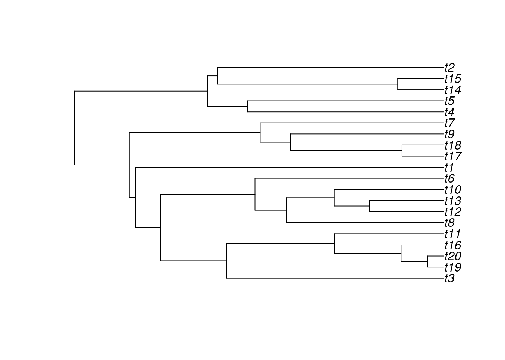
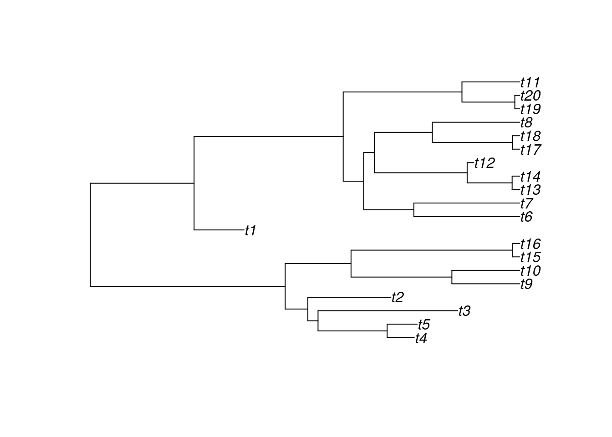
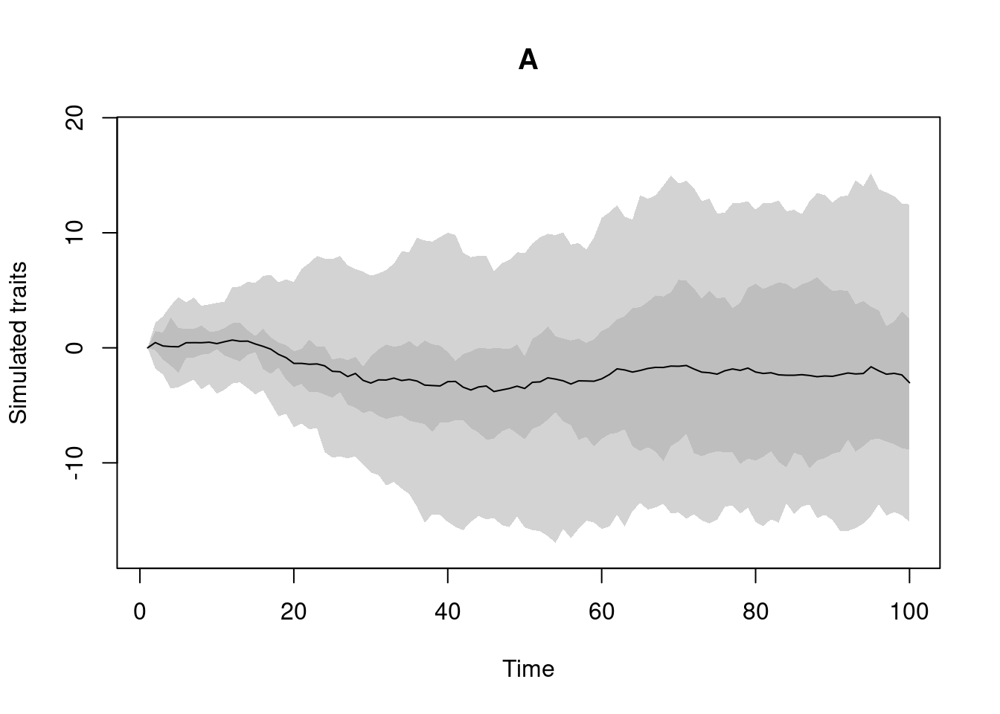
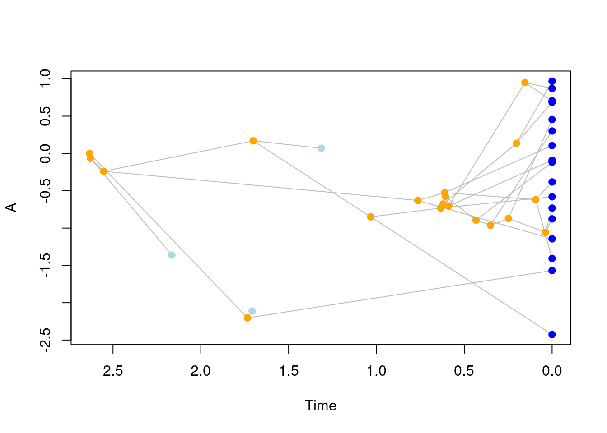
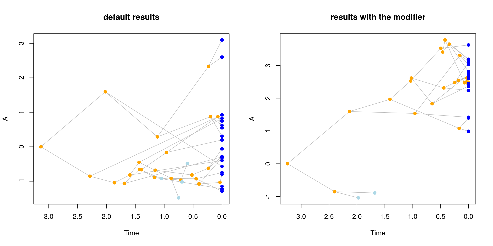

2 Getting started
2.1 The simplest of all analysis: simulating diversity only
One of the simplest things to do with the treats package is just to simulate a birth death tree.
For that you can use the function treats and specify your stopping rule.
The stopping rule simply tells the birth death process to step whenever it reaches one of these three conditions:
"max.taxa" = nstop whenntaxa are generated;"max.living" = nstop when there isnco-occuring taxa of the same age (i.e. “living” taxa);"max.time" = nstop when the simulated tree isnunits of age old (these units are arbitrary);
For example, we might want to generate a birth-death tree with 20 taxa:
## Setting a stopping rule to reach a maximum of 20 taxa
my_stop_rule <- list(max.taxa = 20)We can now run the simulations using:
## Running the birth death simulation
my_tree <- treats(stop.rule = my_stop_rule)Note that here we could have specified more than one stopping rule, for example, we might want to run a simulation and stop it if it either reaches 10 taxa or the age 2 using
stop.rule = list(max.time = 2, max.taxa = 10). The simulation will then stop when either of these conditions are met.
The resulting object is a classic "phylo" object that you can simply plot or visualise like so:
## The tree object
my_tree##
## Phylogenetic tree with 20 tips and 19 internal nodes.
##
## Tip labels:
## t1, t2, t3, t4, t5, t6, ...
## Node labels:
## n1, n2, n3, n4, n5, n6, ...
##
## Rooted; includes branch lengths.## Plotting it
plot(my_tree)
2.1.1 Changing the birth-death parameters
People familiar with the birth-death models might have noticed that we did not specify two important things here: the speciation parameter (sometimes called “lambda” or “birth”) and the extinction parameter (sometimes called “mu”, “death” or “background extinction”).
By default treats runs a pure birth model (the speciation is set to 1 and the extinction to 0).
However, you can easily change that by specifying your new birth death parameters:
## my birth death parameters
my_params <- list(speciation = 1,
extinction = 1/3)Note that here it is not necessary to specify
speciation = 1since this is the default option, you can always just change the parameter of interest (e.g. changingextinction = 0toextinction = 1/3). However, we think it’s good practice to attribute both parameters specifically to avoid any confusion. You can find more information about setting up more complex birth death parameters in this section.
You can then run the same birth death tree with extinction:
## Generating a birth death tree with extinctions:
my_tree <- treats(bd.params = my_params, stop.rule = my_stop_rule)
## Visualising the new tree
plot(my_tree)
2.2 Slightly more complex: simulating disparity and diversity
Chances are that you want to also simulate traits (disparity) along with your diversity (otherwise, we suggest using the TreeSim package that provides many more birth death models).
Simulating traits is not much more complicated in treats: you’ll simply need to create a "traits" object using the make.traits function.
These objects can have increasing complexity (see the rest of this tutorial) but we will keep it simple here.
"traits" objects contain one or more processes which are the ways to generate the trait.
The most common of these processes is the Brownian Motion.
This is used by default with the make.traits function:
## Creating the traits object
my_trait <- make.traits()This trait object can be simply printed (to see what’s in it) or plotted (to see what the process looks like in the absence of a phylogeny):
## Which process is in here?
my_trait## ---- treats traits object ----
## 1 trait for 1 process (A) with one starting value (0).## What does it look like?
plot(my_trait)
By default, this trait is called “A”.
This is not a really good name but you’ll see more about specifying trait names later on.
If this is what the process should look like (theoretically) you can then add its "traits" object to our previous treats function to generate the tree and the traits:
## Simulate disparity and diversity
my_data <- treats(bd.params = my_params,
stop.rule = my_stop_rule,
traits = my_trait)Et voilà! We now have a simple disparity and diversity simulation. We can see what’s in the results by simply printing it or plotting it:
## What's in there
my_data## ---- treats object ----
## Simulated diversity data (x$tree):
##
## Phylogenetic tree with 20 tips and 19 internal nodes.
##
## Tip labels:
## t1, t2, t3, t4, t5, t6, ...
## Node labels:
## n1, n2, n3, n4, n5, n6, ...
##
## Rooted; includes branch lengths.
##
## Simulated disparity data (x$data):
## 1 trait for 1 process (A) with one starting value (0).## Plotting the disparity and diversity
plot(my_data)
You can then extract the components you need for your specific analysis like so:
## Extracting the tree (a "phylo" object)
the_generated_tree <- my_data$tree
class(the_generated_tree)## [1] "phylo"## Extracting the data (a "matrix")
the_generated_data <- my_data$data
class(the_generated_data)## [1] "matrix" "array"You can find much more on how to design trait objects in the make.traits section.
2.3 Slightly more more complex: simulating linked disparity and diversity
The example above is also still pretty simple and easily done through a variety of R packages: here the trait and the tree are simulated at the same time but only the tree is simulating the trait (i.e. the trait value at a tip is affected by it’s ancestor and the branch length leading to it) but not the other way around (the trait value does not affect the tree).
It is possible to add this aspect using "modifiers" objects.
"modifiers" are similar to "traits" in that you specify what should go in there and then feed it to your simulation.
"modifiers" affect two key steps of the birth-death process: the calculation of the waiting time (i.e. the component generating branch lengths) and the triggering of speciation or extinction events.
These events can be modified using some condition and modify function.
In other words, when reaching a certain condition specified by a condition function, the birth-death process will modify either the branch length or the speciation (or extinction) probability by applying a modify function.
You can use the function make.modifiers to design a specific "modifiers" object.
By default, this function generates a "modifiers" object that affects branch length and speciation in the following way:
- branch length is a randomly drawn number from an exponential distribution with a rate equal to the current number of taxa multiplied by the sum of the speciation and extinction rates.
- speciation is triggered if a randomly drawn number (from a (0,1) uniform distribution) is smaller than the ratio between the speciation rate and the sum of the speciation and extinction rates. If that random number is greater, the lineage goes extinct.
Note that these are default for a birth death tree and were actually already applied in the examples before (without specifying a modifier):
## Make a default modifiers
default_modifiers <- make.modifiers()
## What's in it?
default_modifiers## ---- treats modifiers object ----
## No modifiers applied to the branch length, selection and speciation processes (default).This will not do much to our simulations compared to the previous trait and tree simulation but we can provide our modifiers object to the treats function:
## Setting the simulation parameters
extinction_02 <- list(extinction = 0.2)
living_20 <- list(max.living = 20)
BM_trait <- make.traits()
set.seed(1)
## Simulate disparity and diversity
default_data <- treats(bd.params = extinction_02,
stop.rule = living_20,
traits = BM_trait,
modifiers = default_modifiers)
default_data## ---- treats object ----
## Birth death process with modifiers:
## speciation: 1.
## extinction: 0.2.
## No modifiers applied to the branch length, selection and speciation processes (default).
##
## Simulated diversity data (x$tree):
##
## Phylogenetic tree with 24 tips and 23 internal nodes.
##
## Tip labels:
## t1, t2, t3, t4, t5, t6, ...
## Node labels:
## n1, n2, n3, n4, n5, n6, ...
##
## Rooted; includes branch lengths.
##
## Simulated disparity data (x$data):
## 1 trait for 1 process (A) with one starting value (0).Note however that the printing information is now updated to state that you’ve added a modifier (even though it’s a default one).
For more interesting simulations however, you can provide modifiers that actually modify the birth death process.
We can create one for example that makes species go extinct if their ancestor have a negative trait value.
For that we need to create a modifiers object that modifies the speciation process with a specific condition and a specific modification when that condition is met.
For a speciation to occur (and a species to not go extinct), the algorithm draws a random value x between 0 and 1 and if the value is smaller than the speciation parameter divided by the speciation + extinction parameter, the lineage speciates (\(x < (\lambda \ (\lambda + \mu))\)), else it goes extinct.
Here we can create a modifier forcing the lineage to go extinct every time a specific condition is met (say the lineage trait value is negative). In other words, if the lineages trait value is negative, make sure that x is equal to 1 (so that the speciation condition \(x < (\lambda \ (\lambda + \mu))\) is never met).
First we need to create a condition function to trigger this (non) speciation event.
We can do that by specifying our condition function (when the ancestor is trait is negative) apply our modification (here the staying.alive function).
For that we can use the parent.traits utility function that is optimised for accessing traits in the birth death process (but you can of course write your own).
This function intakes the trait.values and parent.lineage arguments, two arguments that you can leave named as they are to facilitate treats’ understanding of what you want to assess:
## Triggering a modification only if the ancestor trait is negative
negative.ancestor <- function(trait.values, lineage) {
return(all(parent.traits(trait.values, lineage) < 0))
}Note that we use the function
allhere to evaluate all traits: i.e. if the data has more than one trait we trigger the modification only if all the trait values are negative.
The we are going to create the modification function.
This function must intake the argument x and, in our case, returns the same value no matter what: 1 so that speciation never happens when the negative.ancestor function is triggered.
## Always go extinct
going.extinct <- function(x) return(1)We can then provide these two functions (the condition negative.ancestor and how to modify the speciation event when this condition is met staying.alive).
If you are an advances treats user, you can design your own speciation function but if you just want to use a normal speciation function, you can use the default one from treats called… speciation.
## Making a modifier for species to go extinct if
## their ancestor's trait value is (or are) negative
negatives_extinct <- make.modifiers(
## If the following condition is met...
condition = negative.ancestor, # Does the lineage has a negative ancestor?
## Then apply the following modifier...
modify = going.extinct, # The species goes extinct
## To the the speciation process.
speciation = speciation) # Here the speciation() process is default
## What's in it?
negatives_extinct## ---- treats modifiers object ----
## Default branch length process.
## Default selection process.
## Speciation process is set to speciation with a condition (negative.ancestor) and a modifier (going.extinct).Note that the make.modifiers function tests whether the input is compatible with treats by default so unless you have an error message, your modifiers will work!
We can now simulate our tree and traits with our modifier: species will go extinct if their ancestor have a negative trait value:
set.seed(1)
## Simulate disparity and diversity
biased_data <- treats(bd.params = extinction_02,
stop.rule = living_20,
traits = BM_trait,
modifiers = negatives_extinct)
biased_data## ---- treats object ----
## Birth death process with modifiers:
## speciation: 1.
## extinction: 0.2.
## Default branch length process.
## Default selection process.
## Speciation process is set to speciation with a condition (negative.ancestor) and a modifier (going.extinct).
##
## Simulated diversity data (x$tree):
##
## Phylogenetic tree with 22 tips and 21 internal nodes.
##
## Tip labels:
## t1, t2, t3, t4, t5, t6, ...
## Node labels:
## n1, n2, n3, n4, n5, n6, ...
##
## Rooted; includes branch lengths.
##
## Simulated disparity data (x$data):
## 1 trait for 1 process (A) with one starting value (0).We can now compare the two trees and their trait values.
Note that we’ve used the same starting seed for both trees so the only thing differing between them is the "modifier" object which leads to very different trees!
par(mfrow = c(1,2))
plot(default_data, main = "default results")
plot(biased_data, main = "results with the modifier")
You can find much more how to design modifiers in the make.modifiers section.